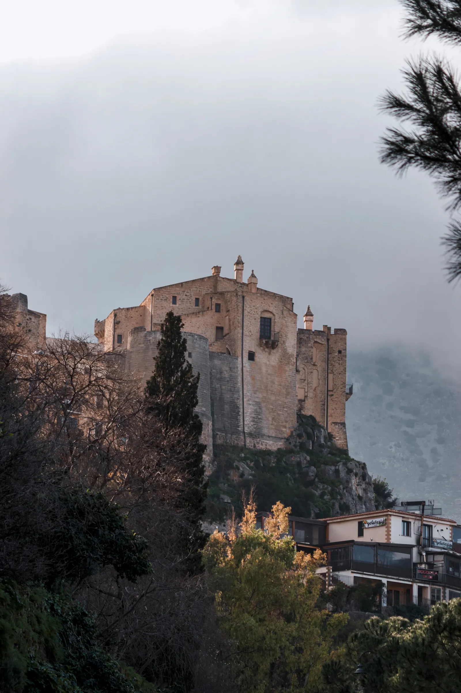

Spesa locale
- Frutta, verdura e specialità locali a circa 200 metri.
- Macelleria Di Maggio, panificio, bar, tabacchi, gelateria e ferramenta in zona.
- Pescheria del Bivio a circa 750 metri, con pescato fresco.
LA NOSTRA GUIDA DEL TERRITORIO
Dalla Dimora di Icaro hai il mare, Palermo, la spesa quotidiana e tanti posti per mangiare a pochi minuti. Qui abbiamo raccolto le informazioni utili dei nostri consigli in italiano e inglese.
← Torna alla homeA PORTATA DI CASA
Per vivere la casa con semplicità: spesa, pane fresco, pesce, farmacia e centri commerciali sono tutti vicini, molti anche raggiungibili in pochi minuti.
COLAZIONE, PRANZO E CENA
Una selezione pratica di bar, gelaterie, botteghe, pizzerie e ristoranti consigliati, dalla colazione siciliana alla cena sul mare.
Sferracavallo, Mondello, Terrasini e Castellammare del Golfo offrono tante opzioni, soprattutto di pesce, spesso con vista mare.
Bar Al Ritrovo, Duci Cafè Bar & Bistrot, Bar Prano, La Nuova Foresta e Al Baglio Gelateria sono opzioni comode tra Villagrazia, Carini e il lungomare.
La Torre, Madre Terra, Le Terrazze, Vitale, I Cumpari, La Baronia, Vitina e Oblivion sono tra le preferite indicate nella guida.
Al Baglio Gelateria sul lungomare, Gelateria Mannino a Carini e diverse gelaterie a Terrasini, soprattutto in piazza Duomo.
Per street food e cucina locale: Via Maqueda, Mercato del Capo, Ballarò, Mondello e Sferracavallo.
A DUE PASSI · CARINI
Carini prende il nome dall'antica Iccara, città fondata tremila anni fa. Passeggiando per il centro si incontra un castello, chiese e una storia che pochi si aspettano a dieci minuti dall'aeroporto.

Una maestosa fortezza normanna dell'XI secolo che domina la città dall'alto. Famoso in tutto il mondo per la tragica storia vera della Baronessa di Carini, assassinata nel 1563. Da non perdere il portale gotico e i panorami mozzafiato dalle terrazze.
ENTRO 30 MINUTI · SPIAGGE
La costa che circonda Carini offre spiagge per tutti i gusti: sabbia finissima, calette rocciose, acque turchesi e lidi attrezzati.
SERATE E TOUR IN BARCA
Per una passeggiata dopo il mare o una cena fuori, queste sono le zone più piacevoli indicate nella guida. Per i tour in barca conviene scegliere il porto in base alla costa che vuoi esplorare.
Lungomare Peppino Impastato a Terrasini, Castellammare del Golfo, Mondello, Molo Trapezoidale e porto di Palermo, Isola delle Femmine, Borgo Parrini e centro storico di Palermo.
Porto di Terrasini e Castellammare per la costa verso San Vito Lo Capo; Isola delle Femmine o Mondello per la costa palermitana; Trapani per Egadi e aliscafi.
PRENOTA IL TUO SOGGIORNO
Dalla Dimora di Icaro hai tutto a portata di mano. Verifica le date disponibili e prenota il tuo soggiorno.